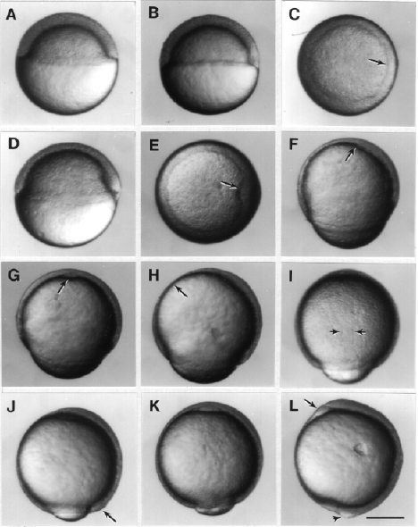

Modified from: Kimmel et al., 1955. Developmental Dynamics 203:253-310. Copyright © 1995 Wiley-Liss, Inc. Reprinted only by permission of Wiley-Liss, a subsidiary of John Wiley & Sons, Inc.
Fig. 11. Development during the gastrula period. Left side views, except where noted, with anterior up and dorsal to the left. A: 50%-epiboly stage (5.25 h). B. Germ ring stage (5.7 h). C. Animal pole view of the germ ring stage; the arrow indicates the germ ring; the embryonic shield will probably developed from the flattened region of the ring at the lower right. D: Shield stage (6 h). The embryonic shield, marking the dorsal side is visible as a thickening of the germ ring to the left. E: Animal pole view of the shield stage; the arrow indicates the embryonic shield. F: 70%-epiboly stage (7.7 h). The dorsal side of the blastoderm, to the left, is thicker than the ventral side, to the right. The anterior axial hypoblast, or prechordal plate, (arrow) extends nearly to the animal pole. G: 70%-epiboly stage, ventral view, but tipped slightly forwards anteriorly to reveal the now well delineated axial hypoblast (arrow) of the prechordal plate. H: 75%-epiboly stage (8 h). The arrow indicates the thin evacuation zone on the ventral side. I: 80%-epiboly stage (8.4 h), dorsal view. The arrows indicate the boundaries between axial mesoderm in the midline, and the paraxial mesoderm flanking to either side. J: 90%-epiboly stage (9 h). The tail bud (arrow) becomes visible in some embryos at this stage. K: 90%-epiboly stage, ventral view. The anterior prechordal plate (compare with G) enlarges as the polster. L: Bud stage (10 h). The arrow shows the polster, and the arrowhead shows the tail bud. A distinctive region just ventral to the tail bud (i.e. just to the left in this view) shows where the yolk disappears as epiboly ends. Scale bar: 250 µm.

Figure 11